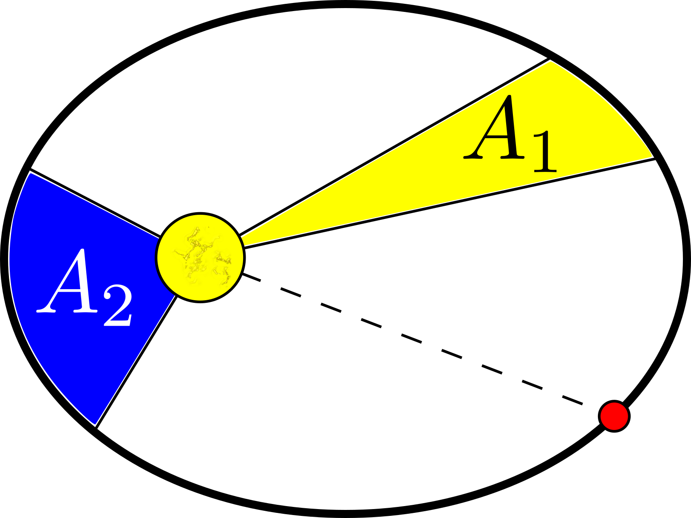
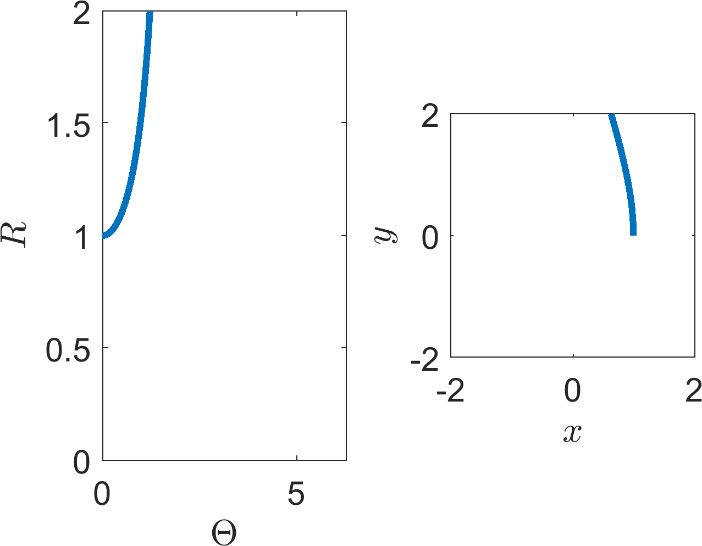
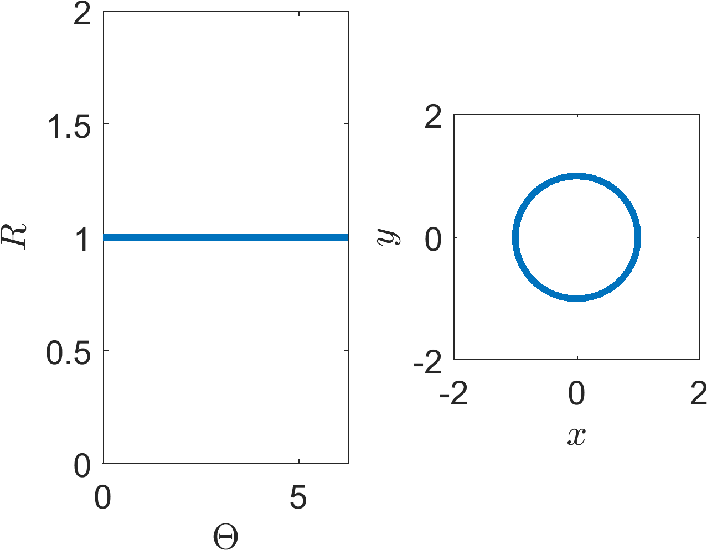
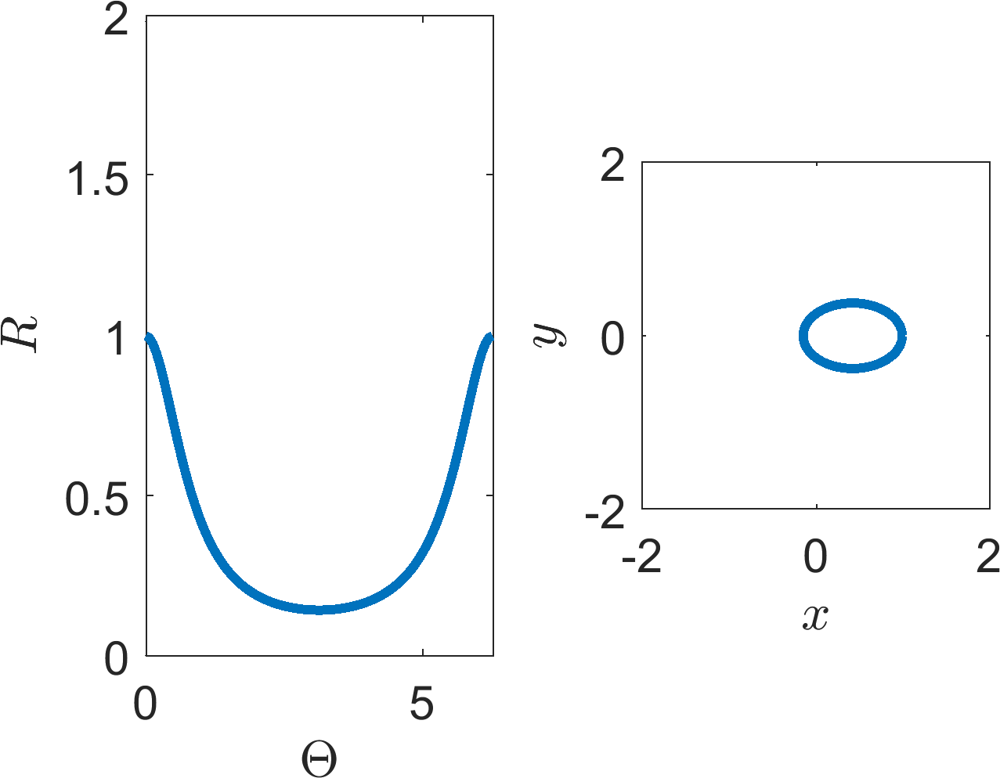

1. Time derivatives of polar coordinates
In this question we are going to be converting between Cartesian and polar coordinates. Moreover, we will be using the transformation relationships to take time derivatives of the polar coordinates. Critically, we will be using symbols, \(r\), \(\boldsymbol{r}\) and \(\hat{\boldsymbol{r}}\). This may seem confusing (because it is), however, these are standard names for the variables we are going to consider. Thus, my advice to you is to be careful over which variable you mean. Note that, although this question seems long, it is split up into a number of small chunks to help you through, thus, each question only requires a small answer.
Consider Figure 1, where we see a point \((x,y)\), which is a distance \(r\) away from the origin along an angle \(\theta\) away from the horizontal. Equally, define \(\boldsymbol{i}\) and \(\boldsymbol{j}\) to be the standard normalised Cartesian vectors,
\[\begin{pmatrix}1\\0\end{pmatrix}, \quad\begin{pmatrix}0\\1\end{pmatrix} \tag{1}\]
respectively. Further, let \(\hat{\boldsymbol{r}}\) and \(\hat{\boldsymbol{\theta}}\) be the normalised polar coordinates along the radial and angular directions as shown.
Cartesian and polar coordinates.
From Figure 1 we can derive the relationship that
\[\hat{\boldsymbol{\theta}}=\begin{pmatrix}-\sin(\theta)\\ \cos(\theta)\end{pmatrix}. \tag{2}\]
What is the equivalent relationship for \(\hat{\boldsymbol{r}}\)?
Rewrite the general coordinate vector
\[\boldsymbol{r}=\begin{pmatrix}x\\y\end{pmatrix} \tag{3}\]
in terms of \(r\), \(\theta\), \(\cos\) and \(\sin\).
Using questions 1 and 2 show that we can rewrite the coordinate vector \(\boldsymbol{r}\) as
\[\boldsymbol{r}=r\hat{\boldsymbol{r}}. \tag{4}\]
Using question 1 show that
\[\dot{\hat{\boldsymbol{r}}}=\begin{pmatrix}-\sin(\theta)\\\cos(\theta)\end{pmatrix}\dot{\theta}. \tag{5}\]
Find a similar result for \(\dot{\hat{\boldsymbol{\theta}}}\).
Rewrite the results of questions 4 and 5 to give \(\dot{\hat{\boldsymbol{r}}}\) and \(\dot{\hat{\boldsymbol{\theta}}}\) in terms of \(\hat{\boldsymbol{r}}\) and \(\hat{\boldsymbol{\theta}}\) (and \(r\) and \(\theta\)).
Combine questions 3 and 6 to show that
\[\dot{\boldsymbol{r}}=\dot{r}\hat{\boldsymbol{r}}+r\dot{\theta}\hat{\boldsymbol{\theta}}. \tag{6}\]
Use question 6 again to take a second derivative of the position vector to show that
\[\ddot{\boldsymbol{r}}=\left(\ddot{r}-r\dot{\theta}^2\right)\hat{\boldsymbol{r}}+\left(2\dot{r}\dot{\theta}+r\ddot{\theta}\right)\hat{\boldsymbol{\theta}}. \tag{7}\]
Assume now that the position is evolving due to an applied force, \(\boldsymbol{F}\), but there is no component of force along the \(\hat{\boldsymbol{\theta}}\) direction, i.e. \(\boldsymbol{F}=F\hat{\boldsymbol{r}}\). Use Newton’s Second Law of Motion to show that
\[F=m\left(\ddot{r}-r\dot{\theta}^2\right), \tag{8}\]
where \(m\) is the mass of the object the force is acting on and
\[r^2\dot{\theta}=\textrm{constant}. \tag{9}\]
Having finished question 9 you will have proven Kepler’s Second Law of Planetary Motion. Namely, if we consider a planet orbiting a sun then a line segment joining the centres of the planet and the Sun sweeps out equal areas during equal intervals of time. This comes from the above result because the force acting on an orbiting planet will be gravitation, which acts along a line connecting the centres of the planets, i.e. there is no angular component to the force. Thus, equation (9) holds and \(r^2\dot{\theta}\) has the interpretation of being the area swept out by the line connecting the two bodies, which is derived to be constant.

Illustrating Kepler’s Second Law of Planetary motion. Suppose \(A_1\) and \(A_2\) are areas swept out by the line connecting the red planet to the yellow sun in the same amount of time. Then equation (9) proves \(A_1=A_2\).
Answer
\[\hat{\boldsymbol{r}}=\begin{pmatrix}\cos(\theta)\\ \sin(\theta)\end{pmatrix}, \quad \hat{\boldsymbol{\theta}}=\begin{pmatrix}-\sin(\theta)\\ \cos(\theta)\end{pmatrix}. \tag{10}\]
\[\boldsymbol{r}=\begin{pmatrix}r\cos(\theta)\\r\sin(\theta)\end{pmatrix}. \tag{11}\]
\[\boldsymbol{r}=\begin{pmatrix}r\cos(\theta)\\r\sin(\theta)\end{pmatrix}=r\begin{pmatrix}\cos(\theta)\\\sin(\theta)\end{pmatrix}=r\hat{\boldsymbol{r}}. \tag{12}\]
Taking derivatives of each component separately and remembering that by the chain rule \(\text{ d}f(u)/\text{ d}t=f'(u)\text{ d}u/\text{ d}t\) we derive
\[\dot{\hat{\boldsymbol{r}}}=\begin{pmatrix}-\sin(\theta)\dot{\theta}\\\cos(\theta)\dot{\theta}\end{pmatrix}. \tag{13}\]
\[\dot{\hat{\boldsymbol{\theta}}}=\begin{pmatrix}-\cos(\theta)\dot{\theta}\\-\sin(\theta)\dot{\theta}\end{pmatrix}. \tag{14}\]
Comparing the vector forms in equations (13) and (14)
\[\dot{\hat{\boldsymbol{\theta}}}=-\hat{\boldsymbol{r}}\dot{\theta},\quad \dot{\hat{\boldsymbol{r}}}=\hat{\boldsymbol{\theta}}\dot{\theta}. \tag{15}\]
\[\dot{\boldsymbol{r}}=\frac{\text{ d}\left(r\hat{\boldsymbol{r}} \right)}{\text{ d}t}=\dot{r}\hat{\boldsymbol{r}}+r\dot{\hat{\boldsymbol{r}}}=\dot{r}\hat{\boldsymbol{r}}+r\dot{\theta}\hat{\boldsymbol{\theta}}. \tag{16}\]
\[\ddot{\boldsymbol{r}}=\frac{\text{ d}\left(\dot{r}\hat{\boldsymbol{r}}+r\dot{\theta}\hat{\boldsymbol{\theta}} \right)}{\text{ d}t}=\ddot{r}\hat{\boldsymbol{r}}+\dot{r}\dot{\hat{\boldsymbol{r}}}+\dot{r}\dot{\theta}\hat{\boldsymbol{\theta}}+r\ddot{\theta}\hat{\boldsymbol{\theta}}+r\dot{\theta}\dot{\hat{\boldsymbol{\theta}}}=\left(\ddot{r}-r\dot{\theta}^2\right)\hat{\boldsymbol{r}}+\left(2\dot{r}\dot{\theta}+r\ddot{\theta}\right)\hat{\boldsymbol{\theta}}. \tag{17}\]
If there is no force along the angular direction then by Newton’s Second Law of Motion (Force=Mass\(\times\)Acceleration)
\[2\dot{r}\dot{\theta}+r\ddot{\theta}=0. \tag{18}\]
Equation (18) can be rewritten as a full derivative
\[\frac{1}{r}\frac{\text{ d}}{\text{ d}t}\left(r^2\dot{\theta}\right)=0. \tag{19}\]
Integrating provides the result
\[r^2\dot{\theta}=\textrm{constant}. \tag{20}\]
2. Two body problem
Consider two planets with the same mass, \(m\), and positions \(\boldsymbol{r}_1(t)\) and \(\boldsymbol{r}_2(t)\), respectively. Let the initial positions be \(\boldsymbol{r}_1(0)=\boldsymbol{r}_{10}\) and \(\boldsymbol{r}_2(0)=\boldsymbol{r}_{20}\) and let the initial velocities be \(\dot{\boldsymbol{r}}_1(0)=\boldsymbol{v}_{10}\) and \(\dot{\boldsymbol{r}}_2(0)=\boldsymbol{v}_{20}\).
(a)
(b)
(a) Positions and forces in the two-body problem. The position \((\boldsymbol{r}_1+\boldsymbol{r}_2)/2\) is the centre of mass of the two body system. (b) Redefining the system so that planet 1 is the origin.
Using Newton’s Law of Gravitation what are the forces \(\boldsymbol{F}_{12}\) and \(\boldsymbol{F}_{21}\)?
Using Newton’s Second Law of Motion, write down two governing equations for the positions of the two planets in terms of the forces derived in part 1 and the accelerations, \(\ddot{\boldsymbol{r}}_1\) and \(\ddot{\boldsymbol{r}}_2\). Deduce that
\[\ddot{\boldsymbol{r}}_1+\ddot{\boldsymbol{r}}_2=0. \tag{21}\]
By proving this result and considering Figure 3(a) we see that the centre of mass of the two-body system exhibits no acceleration. Thus, as the two planets orbit each other they can travel through space, but their movement must be consistent with the fact that their centre of mass is stationary, or moving at a constant speed.
Answers
\[\boldsymbol{F}_{21}=-G\frac{m^2}{|\boldsymbol{r}_2-\boldsymbol{r}_1 |^3}\left(\boldsymbol{r}_2-\boldsymbol{r}_1\right),\quad \boldsymbol{F}_{12}=-G\frac{m^2}{|\boldsymbol{r}_1-\boldsymbol{r}_2 |^3}\left(\boldsymbol{r}_1-\boldsymbol{r}_2\right). \tag{22}\]
\[m\ddot{\boldsymbol{r}}_1=-G\frac{m^2}{|\boldsymbol{r}_1-\boldsymbol{r}_2 |^3}\left(\boldsymbol{r}_1-\boldsymbol{r}_2\right),\quad m\ddot{\boldsymbol{r}}_2=-G\frac{m^2}{|\boldsymbol{r}_2-\boldsymbol{r}_1 |^3}\left(\boldsymbol{r}_2-\boldsymbol{r}_1\right). \tag{23}\]
By adding the two equations together we indeed discover that the sum of the accelerations is zero, as required.
3. Two body problem continued
Instead of considering the two positions separately, we redefine the origin to be planet 1 and consider the motion of planet 2 relative to planet 1 (see Figure 3(b)). Thus, we let \(\boldsymbol{R}=\boldsymbol{r}_2-\boldsymbol{r}_1\) be the new position vector, where \(R=|r_2-r_1|\) is the distance between the two planets and the position vector makes an angle \(\Theta\) against the positive horizontal. From this define \(\hat{\boldsymbol{R}}\) and \(\hat{\boldsymbol{\Theta}}\) to be the new unit vectors in the radial and angular directions. By Newton’s Second Law of Motion (see question 1) the equation governing the system is
\[\left(\ddot{R}-R\dot{\Theta}^2\right)\hat{\boldsymbol{R}}+\left(2\dot{R}\dot{\Theta}+R\ddot{\Theta}\right)\hat{\boldsymbol{\Theta}}=-\frac{Gm}{R^2}\hat{\boldsymbol{R}} \tag{24}\]
or, from question 1,
\[\ddot{R}-R\dot{\Theta}^2=-\frac{Gm}{R^2},\quad R^2\dot{\Theta}=C, \tag{25}\]
where \(C\) is a constant.
Define the variable \(u=C^2/R\) and show that
\[\dot{\Theta}=\frac{u^2}{C^3}. \tag{26}\]
Using part 1 we find that we can rewrite the time derivative as
\[\frac{\text{ d}}{\text{ d}t}=\frac{\text{ d}}{\text{ d}\Theta}\frac{\text{ d}\Theta}{\text{ d}t}=\frac{u^2}{C^3}\frac{\text{ d}}{\text{ d}\Theta}. \tag{27}\]
Using equation (27) show that
\[\dot{R}=-\frac{1}{C}\frac{\text{ d}u}{\text{ d}\Theta}. \tag{28}\]
Hint: use \(R= C^2/u\).
Repeating this procedure rewrite the second time derivative of \(R\) in terms of \(u\) and \(\Theta\). Use all of these derivations to show that
\[\frac{\text{ d}^2 u}{\text{ d}\Theta^2}+u=Gm. \tag{29}\]
Rewrite the initial conditions \(R=C^2\), \(\dot{R}=0\) and \(\Theta=0\) at time \(t=0\) in terms of \(u\) equation (29) and solve equation (29). Show that the final solution to the original problem is
\[R=\frac{C^2}{\cos(\Theta)(1-Gm)+Gm}. \tag{30}\]
Answers
Substitute \(u=C^2/R\) into \(R^2\dot{\Theta}=C\) to produce
\[\dot{\Theta}=\frac{u^2}{C^3}. \tag{31}\]
Using the hint and changing the derivative from \(t\) to \(\Theta\),
\[\dot{R}=\frac{\text{ d}\left(C^2/u\right)}{\text{ d}t}=\frac{u^2}{C^3}\frac{\text{ d}\left(C^2/u\right)}{\text{ d}\Theta}=-\frac{u^2}{C^3}\times\frac{C^2}{u^2}\frac{\text{ d}u}{\text{ d}\Theta}=-\frac{1}{C}\frac{\text{ d}u}{\text{ d}\Theta}. \tag{32}\]
Reapplying equation (27)
\[\ddot{R}=\frac{\text{ d}}{\text{ d}t}\left(-\frac{1}{C}\frac{\text{ d}u}{\text{ d}\Theta} \right)=\frac{u^2}{C^3}\frac{\text{ d}}{\text{ d}\Theta}\left(-\frac{1}{C}\frac{\text{ d}u}{\text{ d}\Theta} \right)=-\frac{u^2}{C^4}\frac{\text{ d}^2 u}{\text{ d}\Theta^2}. \tag{33}\]
Substituting the previous results into
\[\ddot{R}-R\dot{\Theta}^2=-\frac{Gm}{R^2}, \tag{34}\]
gives
\[-\frac{u^2}{C^4}\frac{\text{ d}^2 u}{\text{ d}\Theta^2}-\frac{C^2}{u}\left(\frac{u^2}{C^3}\right)^2=-\frac{Gmu^2}{C^4}. \tag{35}\]
Dividing through by \(-u^2/C^4\) provides the final result
\[\frac{\text{ d}^2 u}{\text{ d}\Theta^2}+u=Gm. \tag{36}\]
Using the initial conditions \(R=C^2 \implies u=1\) and \(\dot{R}=0\implies \text{ d}u/\text{ d}\Theta=0\). Integrating equation (29) gives
\[u=A\cos(\Theta)+B\sin(\Theta)+Gm. \tag{37}\]
The initial conditions specify the constants of integration to be \(A=1-Gm\) and \(B=0\). Inverting the relationship provides the final result,
\[R=\frac{C^2}{\cos(\Theta)(1-Gm)+Gm}. \tag{38}\]
4. Computer simulation or plot by hand
Plot the curve
\[R(\Theta)=\frac{1}{\cos(\Theta)(1-\alpha)+\alpha}, \tag{39}\]
over the range \(0\leq \Theta\leq 2\pi\) for multiple values of \(\alpha\). Plot the curve in both the \((\Theta,R(\theta))\) plane as well as in polar coordinates, i.e. \((R(\Theta)\cos(\Theta),R(\Theta)\sin(\Theta))\).
What happens when:
\(\alpha\) is really big?
\(\alpha=1\)?
\(\alpha\leq \frac{1}{2}\)?
Even if you have not got plotting software, you can still sketch the equations by hand. Which case matches which picture in Figure 4?
What do these cases mean in terms of the planet’s mass and the resulting motion?

(a)

(b)

(c)
Possible trajectories of equation (39).
Answers
If \(\alpha\) is really big then we get a very tight ellipse around the origin.
If \(\alpha=1\) we get a circle of radius 1.
If \(\alpha<1/2\) the function diverges to infinity as \(\Theta\) increases. This means that the planet escapes the gravitational pull of the central planet.
If we make the identification \(\alpha=Gm\) then we reproduce the planetary motion curve. Thus, for planets with very large mass we obtain highly elliptical orbits. For planets with a middling mass the orbits are circular. For planets with low mass the planets hardly affect one another and, thus, do not orbit.
5. Law of Mass Action
Write the following interaction equations as ODEs:
\(3u\stackrel{r_3}{\rightarrow}2u\stackrel{r_2}{\rightarrow}u\stackrel{r_1}{\rightarrow}\not{0}\);
\(2u+v\stackrel{r_1}{\rightarrow}v\), \(2u\stackrel{r_2}{\rightarrow}\not{0}\), \(2u+2v\stackrel{r_3}{\rightarrow}3u\), \(\not{0}\stackrel{r_4}{\rightarrow}u+v\);
\[u_1\mathrel{\mathop{\rightleftarrows}^{d}_{d}}u_2\mathrel{\mathop{\rightleftarrows}^{d}_{d}}u_3\mathrel{\mathop{\rightleftarrows}^{d}_{d}}\dots\mathrel{\mathop{\rightleftarrows}^{d}_{d}}u_{n-1}\mathrel{\mathop{\rightleftarrows}^{d}_{d}}u_n.\]
Write the following ODEs as interaction equations.
\[\dot{u}=r_1u\left(1- \frac{u}{r_2}\right).\]
\[\begin{align} &\dot{u}=-r_1uv-3r_2u^3,\\ &\dot{v}=-r_1uv+r_3. \end{align}\]
Answers
\(\dot{u}=-r_1u-r_2u^2-r_3u^3\).
\[\begin{align} &\dot{u}=-2r_1u^2v-2r_2u^2+r_3u^2v^2+r_4,\\ &\dot{v}=-2r_3u^2v^2+r_4. \end{align}\]
\[\begin{align} &\dot{u}_1=d(u_2-u_1),\\ &\dot{u}_k=d(u_{k+1}-2u_k+u_{k-1}),\quad k=2,\dots,n-1,\\ &\dot{u}_n=d(u_{n-1}-u_n). \end{align}\]
An interesting point to note about this last equation is that it is a finite element discretisation of the diffusion equation.
\(u\stackrel{r_1}{\rightarrow}2u\), \(2u\stackrel{r_1/r_2}{\rightarrow}u\),
\(u+v\stackrel{r_1}{\rightarrow}\not{0}\), \(3u\stackrel{r_2}{\rightarrow}\not{0}\), \(\not{0}\stackrel{r_3}{\rightarrow}v\). Alternatively, the first equation can be written as \(u+v\stackrel{r_1}{\rightarrow}u\) and \(u+v\stackrel{r_1}{\rightarrow}v\). Thus, the law of mass action transformation does not provide a unique mapping.
Exam revision
6. More two-body problem
From question 3 we know that
\[\ddot{R}-R\dot{\Theta}^2=-\frac{Gm}{R^2},\quad R^2\dot{\Theta}=C. \tag{40}\]
Use the second equation, above, to eliminate \(\dot{\Theta}\) from the first equation.
Multiply the resulting equation by \(\dot{R}\). Show that the equation can be rewritten in the following form
\[\frac{\text{ d}}{\text{ d}t}\left(\frac{1}{2}\dot{R}^2+\frac{C^2}{2R^2}-\frac{Gm}{R}\right)=0. \tag{41}\]
Integrate over time noting that initially \(R(0)=R_0\) and \(\dot{R}(0)=0\). Show that you can derive
\[\int^R_{R_0}\frac{\text{ d}R}{\sqrt{C^2\left(\frac{1}{R_0^2}-\frac{1}{R^2}\right)+2Gm\left(\frac{1}{R}-\frac{1}{R_0}\right)}}=t. \tag{42}\]
Suppose a solution, \(R(t)\), exists for all time, then we know that the term within the square root must be positive for all time. Letting \(a=2Gm/C^2\) show that this means that if a solution exists then
\[(R_0-R)(R(R_0a-1)-R_0)>0. \tag{43}\]
Consider the quadratic equation (43) and split the analysis into two cases.
Suppose \(R_0a<1\), show that in this case if a solution, \(R(t)\), exists for all time then \(R>R_0\).
Suppose \(R_0a>1\), show that in this case if a solution, \(R(t)\), exists for all time then
\[\frac{R_0}{(R_0a-1)}<R<R_0, \quad \textrm{if $R_0a>2$} \tag{44}\]
and
\[R_0<R<\frac{R_0}{(R_0a-1)},\quad \textrm{if $1<R_0a<2$.} \tag{45}\]
Answers
Substitute \(\dot{\Theta}=C/R^2\) into the first equation and simplify to get
\[\ddot{R}-\frac{C^2}{R^3}=-\frac{Gm}{R^2}. \tag{46}\]
\[\begin{align} &\dot{R}\ddot{R}-\frac{C^2}{R^3}\dot{R}=-\frac{Gm}{R^2}\dot{R},\\ \implies&\frac{\text{ d}}{\text{ d}t}\left(\frac{1}{2}\dot{R}^2+\frac{C^2}{2R^2}-\frac{Gm}{R}\right)=0. \tag{47} \end{align}\]
\[\begin{align} &\frac{1}{2}\dot{R}^2+\frac{C^2}{2R^2}-\frac{Gm}{R}-\frac{C^2}{2R_0^2}+\frac{Gm}{R_0}=0,\tag{48}\\ \implies &\dot{R}^2+C^2\left(\frac{1}{R^2}-\frac{1}{R_0^2}\right)+2Gm\left(\frac{1}{R_0}-\frac{1}{R}\right)=0,\tag{49}\\ \implies &\int^R_{R_0}\frac{\text{ d}R}{\sqrt{C^2\left(\frac{1}{R_0^2}-\frac{1}{R^2}\right)+2Gm\left(\frac{1}{R}-\frac{1}{R_0}\right)}}=\int^t_0\text{ d}t=t. \tag{50} \end{align}\]
A solution for \(R(t)\) exists for all time if
\[C^2\left(\frac{1}{R_0^2}-\frac{1}{R^2}\right)+2Gm\left(\frac{1}{R}-\frac{1}{R_0}\right)>0. \tag{51}\]
Multiply through by \(R_0^2R^2\) and divide through by \(C^2\), all of which are positive.
\[\left(R^2-R_0^2\right)+aRR_0(R_0- R)=(R_0-R)\left(aRR_0-R-R_0 \right)=(R_0-R)\left(R\left(aR_0-1\right)-R_0 \right)>0. \tag{52}\]
If \(aR_0<1\) the coefficient of the quadratic term is positive. The roots of the quadratic are \(R_0>0\) and \(R_0/(aR_0-1)<0\). Thus, for inequality (52) to be satisfied we need either \(R>R_0\), as suggested in the question or \(R<R_0/(aR_0-1)<0\), which is not possible since \(R>0\).
If \(aR_0>1\) the coefficient of the quadratic term is negative. The roots are \(R_0\) and \(R_0/(aR_0-1)\), which are both positive. For inequality (52) to be satisfied, \(R\) needs to be between these two roots. However, the larger root depends on whether \((aR_0-1)\) is greater or less than one. If \((aR_0-1)>1\) then \(R_0/(aR_0-1)<R_0\) and if \((aR_0-1)<1\) then \(R_0<R_0/(aR_0-1)\), justifying the given ranges.
7. More Law of Mass Action
Write the following interaction equations as ODEs.
\(u\stackrel{r_3/(1+u)}{\rightarrow}2u\).
\(u+v\stackrel{r_1}{\rightarrow}v\), \(u+v\stackrel{r_1}{\rightarrow}u\), \(u+v\stackrel{r_1}{\rightarrow}\not{0}\).
Write the following ODEs as interaction equations.
\[\dot{u}=1.\]
\[\begin{align} &\dot{u}=r_1uv/(1+v^2),\\ &\dot{v}=-r_1uv/(1+v^2). \end{align}\]
Answers
\(\dot{u}=r_3u/(1+u)\).
\(\dot{u}=-2r_1uv=\dot{v}\).
\(\not{0}\stackrel{1}{\rightarrow}u\).
\(u+v\stackrel{r_1/(1+v^2)}{\rightarrow}2u\).